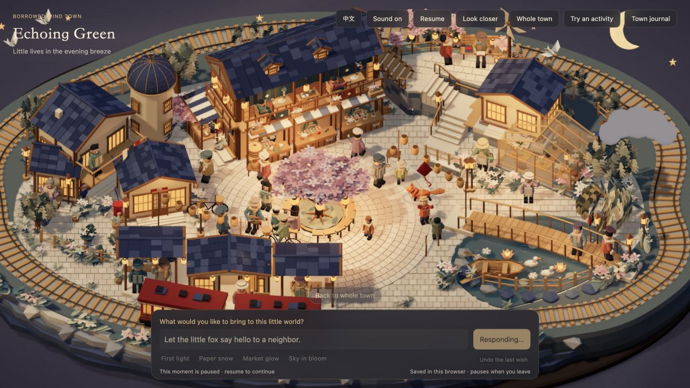

← 回到小镇 · CP48 步态与灯光记录主角提示：暖白细边，淡墨外沿
金色光圈与暖金色地板容易混在一起。这版用灰紫色的柔软外沿建立轮廓，内侧保留暖白纸光：亮石路能看见淡墨边缘，阴影里能靠细边辨认。
提示仍随正在行动的人或物件移动，保留轻微呼吸和结束淡出。小镇整体照明、人物动作、圈的大小与位置不改。
下面是同一个停帧、相同视角与光照，仅切换提示材质。默认放大局部方便比较；可切回全图。图片来自实际网页，没有用画图覆盖来模拟效果。
原版 · 金色叠光
暖地板容易吃掉金色，主体不容易被注意到。
新版 · 纸光与淡墨
细外沿提供对比，内侧留温暖纸光。保持贴地，遮挡关系自然。
放回小镇里

没有新增贴图、模型或真实光源；仍共用原来的实例网格和材质。持续时间、参与者选择、物件换手后的提示交接沿用原逻辑。检查了提示生命周期、参与者范围与资源数，并在实际网页查看。未宣称所有遮挡位置都可看见光圈或跨设备帧率。
去小镇试试 →